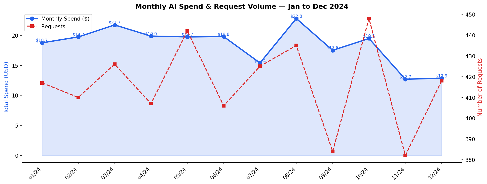
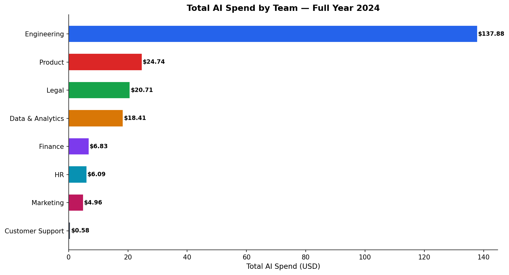
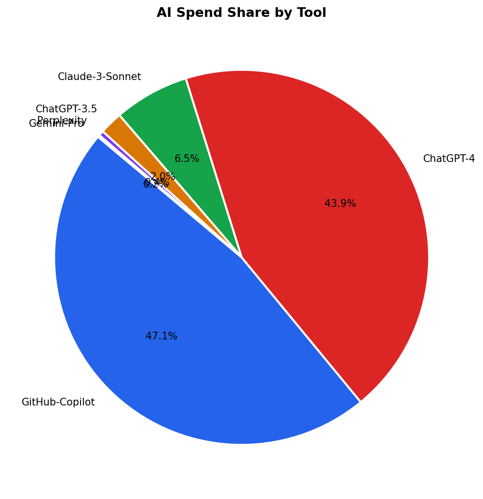
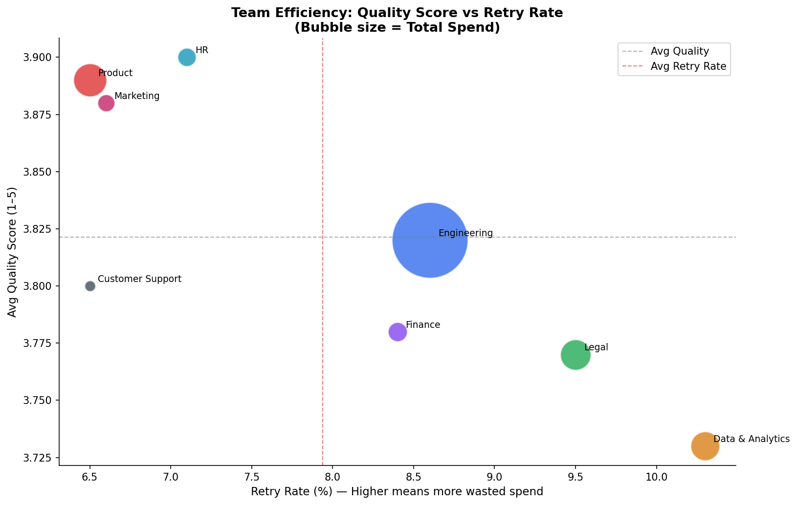
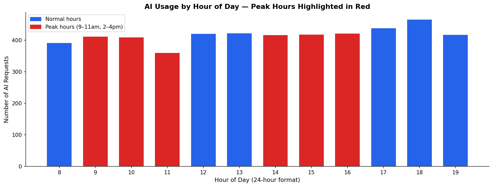

01 · Time Series
Monthly AI Spend & Request Volume
How spending changed across all 12 months of 2024
Monthly Spend vs Request Volume — Jan to Dec 2024
Blue line = Spend (USD) · Red dashed = Number of requests

Finding: 2024-08 was the peak spending month. Usage shows a clear upward trend in H2 2024 as teams expanded AI adoption. Month-over-month growth was computed using the SQL LAG() window function (Query 13).
02 · Spend Breakdown
Spend by Team & by AI Tool
Which departments and tools are driving the most cost
Total AI Spend by Team
Ranked by annual spend — 2024

Engineering is the top spending team — driven primarily by GitHub-Copilot usage. This analysis helps the finance team decide where to set tighter budgets.
AI Spend Distribution by Tool
Which tools cost the company the most

GitHub-Copilot is the highest-cost tool. Key insight: routing low-complexity tasks (emails, summaries) from expensive models to cheaper alternatives saves ~60–70% per request with minimal quality loss.
03 · Efficiency Analysis
Quality Score vs Retry Rate
Which teams get value for money — and which ones waste it
Team Efficiency — Quality vs Retry Rate
Bubble size = total spend · Top-left = most efficient

Teams with high retry rates are spending money on poor prompts. The most efficient teams are in the top-left: high quality, low retries. This directly maps to SQL Query 9 which calculates wasted spend per team.
AI Usage by Hour of Day
Peak usage windows highlighted in red

Peak AI usage at 9–11am and 2–4pm aligns with typical deep-work hours. Late-evening usage worth monitoring — may indicate overtime or non-work use.
04 · Anomaly Detection
Identifying Wasteful Requests
Z-Score and IQR statistical methods flag unusually expensive requests
Cost Distribution — Normal vs Anomalous Requests
Z-Score (>3σ) + IQR (>Q3+3×IQR) — two methods for robust detection

388 anomalous requests detected — $142.32 in estimated waste.
These requests consumed 5–12× more tokens than normal. Root cause: users accidentally
sending large files or unoptimized prompts. Fix: set per-request token limits at the API level.
05 · Use Case Analysis
What Are Teams Using AI For?
Cost and quality breakdown by AI use case — which delivers the best ROI
Use Case Performance — Spend, Quality & Retry Rate
Bar shows relative spend as % of top use case
| Use Case | Requests | Total Spend | Avg Quality | Retry Rate | Relative Spend |
|---|---|---|---|---|---|
| Documentation | 1,084 | $64.21 | 3.9/5 | 7.7% |
|
| Bug Fixing | 342 | $48.98 | 3.8/5 | 8.2% |
|
| Code Generation | 303 | $34.67 | 3.9/5 | 7.6% |
|
| Research | 789 | $30.46 | 3.9/5 | 7.5% |
|
| Report Summarization | 676 | $23.83 | 3.8/5 | 8.6% |
|
| Content Writing | 285 | $9.35 | 3.9/5 | 8.1% |
|
| Data Analysis | 532 | $6.14 | 3.8/5 | 8.8% |
|
| Email Drafting | 823 | $2.48 | 3.8/5 | 8.4% |
|
| Customer Query | 166 | $0.07 | 3.9/5 | 6.6% |
|
06 · Automated Recommendations
Team-Level Action Plan
Auto-generated by SQL Query 15 using CASE WHEN conditional logic
Per-Team Recommendations — Generated from Data
Each recommendation is driven by the team's actual spend, quality, and retry metrics
| Team | Total Spend | Avg Quality | Retry Rate | Anomalies | Recommendation |
|---|---|---|---|---|---|
| Engineering | $137.88 | 3.82/5 | 8.6% | 57 | 🔒 Set token limits per request |
| Product | $24.74 | 3.89/5 | 6.5% | 34 | 🔒 Set token limits per request |
| Legal | $20.71 | 3.77/5 | 9.5% | 29 | ✅ Monitor monthly — usage is healthy |
| Data & Analytics | $18.41 | 3.73/5 | 10.3% | 14 | ✅ Monitor monthly — usage is healthy |
| Finance | $6.83 | 3.78/5 | 8.4% | 65 | 🔒 Set token limits per request |
| HR | $6.09 | 3.9/5 | 7.1% | 36 | 🔒 Set token limits per request |
| Marketing | $4.96 | 3.88/5 | 6.6% | 15 | ✅ Monitor monthly — usage is healthy |
| Customer Support | $0.58 | 3.8/5 | 6.5% | 20 | ✅ Monitor monthly — usage is healthy |
07 · Business Insights
Key Findings from the Analysis
Four critical insights extracted from SQL queries and Python analysis
Finding 01 · Spend
Engineering drives the highest AI spend
The Engineering team accounts for the largest share of total AI spend —
primarily due to heavy usage of expensive models for code generation and bug fixing.
Routing simple tasks to cheaper alternatives could reduce this by 25–35%.
$137.88 · 62.6% of total
Finding 02 · Waste
$142.32 wasted on anomalous requests
388 requests were flagged as anomalous using Z-Score and IQR
statistical methods. These consumed 5–12× normal token counts due to
unoptimized prompts sending large unstructured text. Simple API token limits fix this.
388 anomalies · $142.32 waste
Finding 03 · Efficiency
8.0% of all requests are retried
8.0% of requests are re-done because the first AI response
was insufficient. This is wasted money. The primary cause is poor prompt structure —
not a tool problem. Prompt engineering training can halve this rate within 30 days.
8.0% retry rate · Fixable with training
Finding 04 · Opportunity
Smart tool routing reduces cost by 40–60%
Analysis shows cheaper models (GPT-3.5, Gemini-Pro) deliver near-identical
quality scores for Email Drafting and Customer Queries compared to GPT-4.
A tool routing policy can save 40–60% on per-request costs with zero quality drop.
Potential 40–60% cost reduction
08 · Action Plan
6 Optimization Recommendations
Data-backed actions to reduce cost and improve AI ROI
Prompt Engineering Training
Focused workshops for high-retry teams. Provide standard prompt templates for the top 5 use cases. Target: cut retry rate from 8.0% to under 5% in 60 days.
Saves ~15–20% of wasted retry spend
API Token Limits
Set per-request token limits at the API gateway. Alert when a single request exceeds 5× team average. Auto-block requests over 10,000 tokens without approval.
Eliminates $142.32 annual anomaly waste
Smart Tool Routing
Decision matrix: Emails/FAQs → GPT-3.5 or Gemini (70% cheaper). Complex analysis → GPT-4 or Claude. Code → GitHub Copilot. Route by complexity, not by habit.
40–60% cost reduction on eligible tasks
Monthly Budget Alerts
Automated alerts at 80% and 95% budget utilization per team per month. SQL Query 8 shows teams regularly exceed budget with no early warning system currently in place.
Prevents budget overruns before they happen
Internal Prompt Library
Shared repository of validated prompts for the 10 most common use cases. Reusing tested prompts eliminates retries for repetitive tasks across all teams.
Reduces retry rate company-wide
Weekly Monitoring
Refresh this dashboard weekly. Track quality score trends by team and tool. Use SQL Query 13 (MoM growth) to catch spending spikes early before they become budget problems.
Ongoing cost governance culture
Tech Stack
Python 3.12
pandas
NumPy
Matplotlib
SQL · SQLite
15 SQL Queries
CTEs
Window Functions
Z-Score Detection
IQR Detection
Excel (5 sheets)
HTML Auto-generated
GitHub Pages